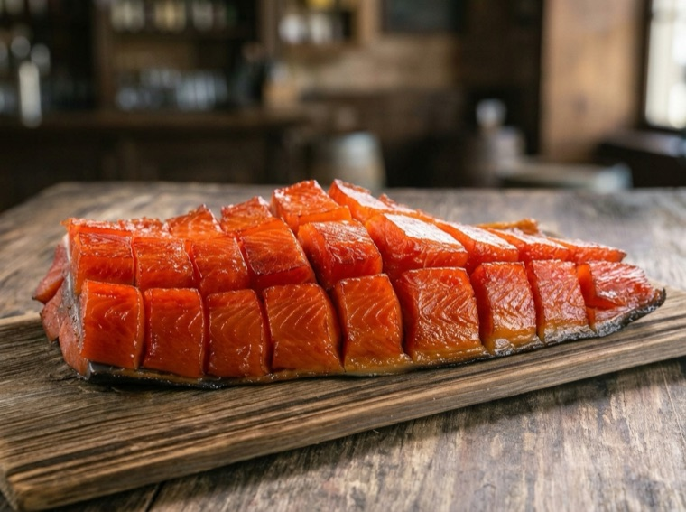

Pește afumat & platouri la bere · CHIȘINĂU
Somon afumat & Pește afumat GYM BEER
Vitrina de afumături GYM BEER este motivul pentru care clienții revin seară de seară: somon afumat crestat, felii fragede de balîk, tolstolob, stavrid și pește uscat — cântărite proaspăt pe loc.

Fișă tehnică & profil de gust
- Origine
- Vitrina frigorifică GYM BEER · Chișinău
- Stil
- Pește afumat & platouri la bere
- Alcool / Amăreală
- Gustare la gramaj · Fără alcool
- Temperatură servire
- Servit rece
- Preț referință
- la gramaj
Aromă: Fum natural delicat, aromă apetisantă de pește proaspăt afumat la rece.
Gust: Textură fragedă, suculentă și sărare echilibrată — concepută special să completeze berea rece la draft fără să o acopere.
Cu ce gustări merge la GYM BEER: Combinația regină: somon afumat + HOLZ Weissbier sau Kronenbourg 1664 Blanc; pește uscat + HOLZ Munich Helles sau Kozel Světlý.
Servire, păstrare & asociere cu berea la GYM BEER
Pot cumpăra doar pește afumat sau gustări fără bere?
Sigur! Orice produs din vitrina de afumături, calmar, creveți sau basturma poate fi cumpărat separat la gramaj.
Cum verific disponibilitatea azi?
Sună la +373 69 482 293 sau vino zilnic între 10:00 și 22:00 în Botanica sau Buiucani.
Alte produse populare din meniu: HOLZ Munich Helles · HOLZ IPA · HOLZ Weissbier · Kozel Světlý · Corona Extra
Ghiduri utile: Cum alegi pește afumat proaspăt · Ghid raci fierți & bere · Toate ghidurile ↗